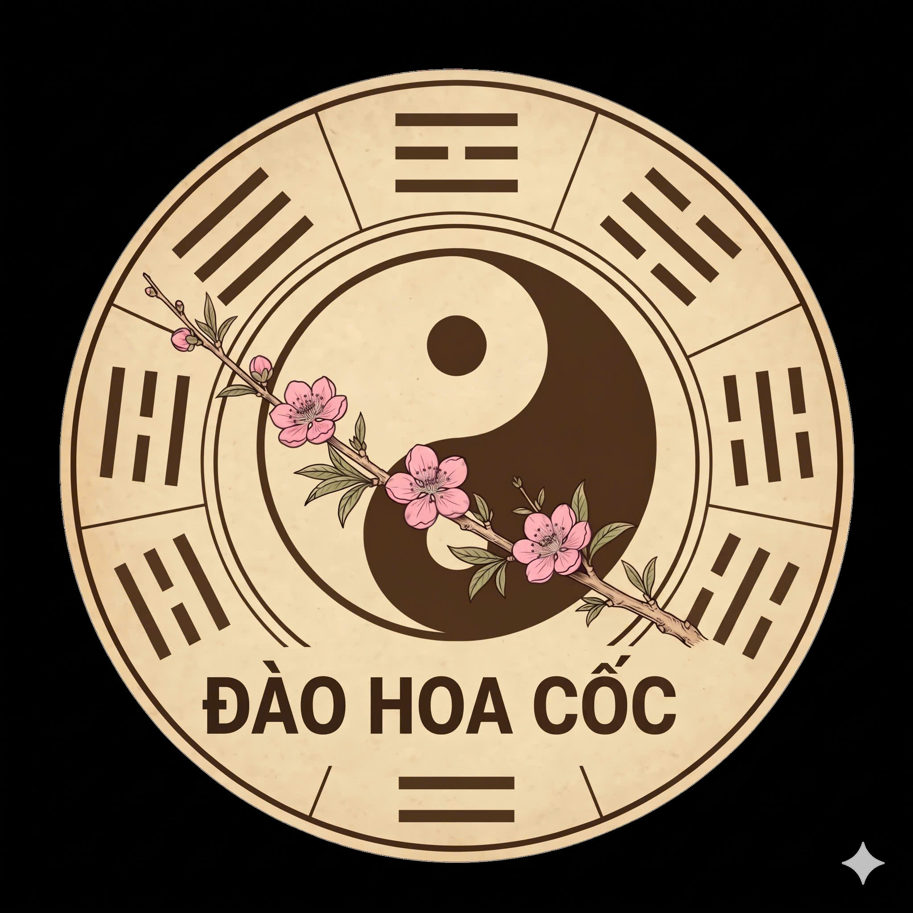

Bóc quẻ tình duyên, tham khảo và giải trí
Điền thông tin bên dưới để mình lập quẻ. Thông tin này chỉ dùng để bóc quẻ, mình không đăng tên thật lên kênh.
Cảm ơn bạn đã gửi thông tin. Mình sẽ lập quẻ và phản hồi.
Lắng lòng, nghĩ về điều bạn đang băn khoăn rồi bấm xin xăm.
Bạn chưa xin xăm.
Xăm chỉ mang tính giải trí và tham khảo.
Trong đầu hãy nghĩ một câu hỏi có/không, rồi bấm tung keo.
Bạn chưa tung keo.
Keo chỉ mang tính giải trí và tham khảo. Hãy hỏi câu có/không để keo trả lời rõ ràng.
Nội dung trên kênh mang tính tham khảo và giải trí, không thay thế quyết định của bạn trong tình cảm, tài chính hay cuộc sống. Không có kết quả nào được đảm bảo.